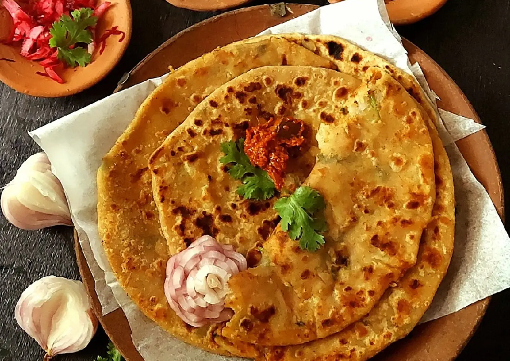
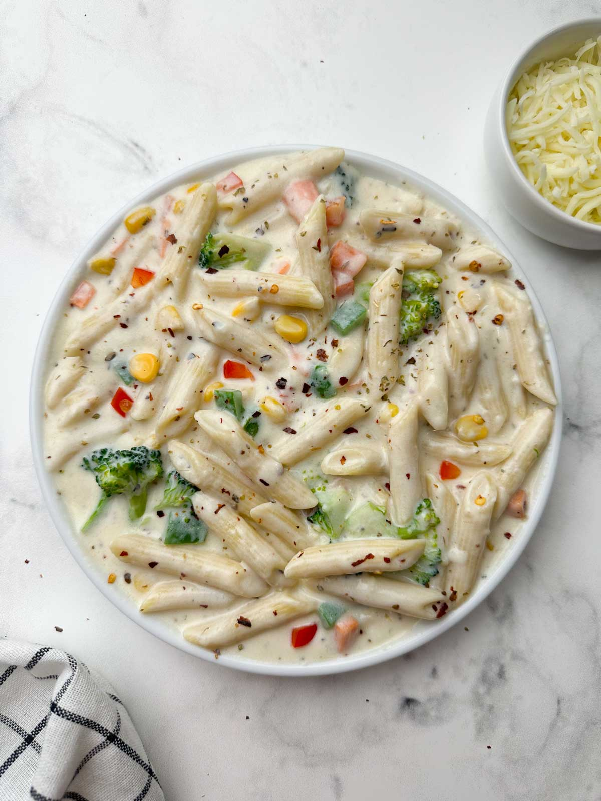

Aloo Paratha

This is a traditional Indian bread filled with a well seasoned boiled potato studding that is very popular for every age group. It's a heavenly dish to serve on a rainy day. It's an easy recipe and a definite group pleaser. Garnish each paratha with a thin slice of butter and serve with plain yogurt.
Vegetarian High Protein Burger
Who said healthy food is tasteless?
Introducing a vegetarian meal that will soothe your taste buds while also not destroying your health at the same time. So get ready to enjoy eating healthy. It is very easy and quick to make and also takes minimal ingridients.

Bechamel Sauce Pasta

Cheese and Pasta!
Sounds fun, innit? Minimal ingridients, easy to make, takes less time, the added veggies make it nutritious, creamy, now what else do you need? This dish should be the one to pull you out of depression.
Sounds fun, innit? Minimal ingridients, easy to make, takes less time, the added veggies make it nutritious, creamy, now what else do you need? This dish should be the one to pull you out of depression.